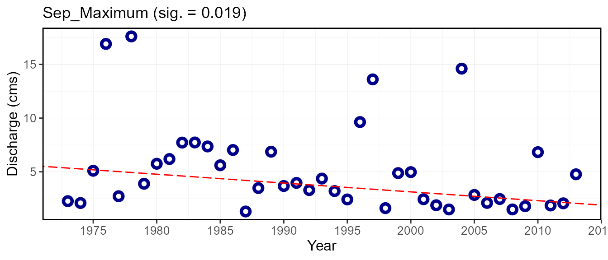

vignettes/fasstr_trending_analysis.Rmd
fasstr_trending_analysis.Rmdfasstr, the Flow Analysis Summary Statistics Tool for R,
is a set of R functions to
tidy, summarize, analyze, trend, and visualize streamflow data. This
package summarizes continuous daily mean streamflow data into various
daily, monthly, annual, and long-term statistics, completes trending and
frequency analyses, with outputs in both table and plot formats.
This vignette documents the usage of the
compute_annual_trends() function in fasstr.
This vignette is a high-level adjunct to the details found in the
function documentation (see ?compute_annual_trends()).
You’ll learn what arguments to provide to the function to customize your
analysis, what analyses are computed, and what outputs are produced.
Determining trends in streamflow data can provide information on
potential changes in hydrological processes over time. The annual
trending analysis with fasstr allows for customization of
both the inputs and outputs. This function takes up to 107 annual
streamflow metrics (calculated using various annual fasstr
functions) and calculates prewhitened, non-parametric trends using the
Mann-Kendall test performed using the zyp R
package. See the zyp documentation
for more information on the methods.
Each annual metric/time-series is analyzed for trends using trend-free prewhitening to remove lag-1 correlation (may artificially detect a significant trend). The slope of each metric over time is then estimated using the Theil-Sen approach. If the estimated slope is different from zero, then the data are detrended by the slope and the AR(1) 1s calculated for the detrended time series. The residuals and the trend are combined and then tested for significance using the Mann-Kendall trend test.
The trending function results in a list containing two tibble data frame outputs and, if selected, plot for each metric trended.
fasstr functionszyp trending analysis, and includes various other
statisticsTo determine annual trends from a daily streamflow data set, the
compute_annual_trends() function will take daily data,
either from HYDAT using the station_number argument or your
own data frame of data using the data argument to complete
the analysis. To complete a custom trends analysis of data please see
the zyp functions for more information.
This function is provided to calculate trends on a multitude of
annual metrics, as calculate by various annual and monthly
fasstr functions. The functions will calculate metrics from
each of the following functions:
calc_annual_stats() - calculate annual summary
statisticscalc_annual_cumulative_stats() - calculate annual and
seasonal cumulative flows, both volume and yieldcalc_annual_flow_timing() - calculate annual flow
timingcalc_annual_lowflows() - calculate annual lowflowscalc_annual_normal_days() - calculate annual days above
and below normalcalc_monthly_stats() - calculate annual monthly summary
statisticsWhile each of the different metrics have default variables for their arguments, many of them can be customized. The following table shows which arguments are used for which statistics and what the defaults are. See the documentation for more information.
| Argument | Corresponding Function | Default |
|---|---|---|
annual_percentiles |
calc_annual_stats() |
c(10,90) |
monthly_percentiles |
calc_monthly_stats() |
c(10,20) |
stats_days |
calc_annual_stats() &
calc_monthly_stats()
|
1 |
stats_align |
calc_annual_stats() &
calc_monthly_stats()
|
"right" |
lowflow_days |
calc_annual_lowflows() |
c(1,3,7,30) |
lowflow_align |
calc_annual_lowflows() |
"right" |
timing_percent |
calc_annual_flow_timing() |
c(25,33.3,50,75) |
normal_percentiles |
calc_annual_normal_days() |
c(25,75) |
With fasstr version 0.4.0, the months argument is now
included in the trending function to specify which months of the year to
include for trending. For example, selecting months = 7:9
means that all annual and monthly statistics will be calculated just
from July through September to be tested for trends. This gives the user
more flexibility to trend more statistics. Since selecting months may
complicate seasonal totals, seasonal yields and seasonal volumes are not
included in the results if not all 12 months are selected.
Example with default arguments:
compute_annual_trends(station_number = "08NM116",
zyp_method = "zhang",
start_year = 1973, end_year = 2013)Example with custom arguments:
compute_annual_trends(station_number = "08NM116",
zyp_method = "zhang",
start_year = 1973, end_year = 2013,
annual_percentiles = c(10,90),
monthly_percentiles = c(10,20),
stats_days = 1,
stats_align = "right",
lowflow_days = c(1,3,7,30),
lowflow_align = "right",
timing_percent = c(25,33,50,75),
normal_percentiles = c(25,75))Example with custom months arguments that will trend data only from May through September:
compute_annual_trends(station_number = "08NM116",
zyp_method = "zhang",
start_year = 1973, end_year = 2013,
months = 5:9)This annual data is provided in the
Annual_Trends_Data tibble objects. The following is an
example of the output, including all the annual metrics and a first few
years of data used for the zyp trends analysis:
Statistic 1973 1974 1975
1 Annual_Maximum 37.700 66.000 48.700
2 Annual_Mean 3.331 8.430 5.483
3 Annual_Median 0.980 1.340 1.540
4 Annual_Minimum 0.025 0.447 0.320
5 Annual_P10 0.549 0.709 0.580
6 Annual_P90 8.832 32.980 19.580
7 Min_1_Day 0.025 0.447 0.320
8 Min_1_Day_DoY 293.000 333.000 11.000
9 Min_3_Day 0.045 0.533 0.378
10 Min_3_Day_DoY 295.000 334.000 39.000
11 Min_7_Day 0.194 0.602 0.416
12 Min_7_Day_DoY 299.000 346.000 41.000
13 Min_30_Day 0.574 0.665 0.494
14 Min_30_Day_DoY 249.000 358.000 58.000
15 Total_Volume_m3 105036393.421 265854182.477 172900396.854
16 Jan-Jun_Volume_m3 84993926.226 223662988.720 136045958.439
17 Jul-Dec_Volume_m3 20042467.195 42191193.757 36854438.415
18 Jan-Mar_Volume_m3 5734540.834 8368012.779 5258217.605
19 Apr-Jun_Volume_m3 79259385.392 215294975.941 130787740.834
20 Jul-Sep_Volume_m3 7503580.782 35216640.131 24657350.460
21 Oct-Dec_Volume_m3 12538886.413 6974553.626 12197087.955
22 Total_Yield_mm 132.121 334.408 217.485
23 Jan-Jun_Yield_mm 106.911 281.337 171.127
24 Jul-Dec_Yield_mm 25.211 53.071 46.358
25 Jan-Mar_Yield_mm 7.213 10.526 6.614
26 Apr-Jun_Yield_mm 99.697 270.811 164.513
27 Jul-Sep_Yield_mm 9.438 44.298 31.016
28 Oct-Dec_Yield_mm 15.772 8.773 15.342
29 DoY_25pct_TotalQ 138.000 135.000 146.000
30 DoY_33pct_TotalQ 141.000 146.000 153.000
31 DoY_50pct_TotalQ 151.000 158.000 162.000
32 DoY_75pct_TotalQ 172.000 173.000 177.000
33 Normal_Days 120.000 221.000 206.000
34 Below_Normal_Days 230.000 69.000 129.000
35 Above_Normal_Days 15.000 75.000 30.000
36 Jan_Mean 0.730 1.023 0.625
37 Jan_Median 0.705 1.020 0.595
38 Jan_Maximum 0.963 1.260 1.050
39 Jan_Minimum 0.595 0.864 0.320
40 Jan_P10 0.626 0.906 0.507
41 Jan_P20 0.643 0.934 0.538
42 Feb_Mean 0.670 0.985 0.490
43 Feb_Median 0.676 0.984 0.483
44 Feb_Maximum 0.728 1.060 0.614
45 Feb_Minimum 0.595 0.830 0.368
46 Feb_P10 0.619 0.944 0.407
47 Feb_P20 0.632 0.957 0.449
48 Mar_Mean 0.806 1.211 0.896
49 Mar_Median 0.799 1.120 0.943
50 Mar_Maximum 0.951 2.140 1.390
51 Mar_Minimum 0.685 0.855 0.677
52 Mar_P10 0.708 0.937 0.694
53 Mar_P20 0.736 0.983 0.716
54 Apr_Mean 1.774 7.761 1.789
55 Apr_Median 1.510 4.910 1.780
56 Apr_Maximum 3.450 28.300 3.400
57 Apr_Minimum 0.852 1.850 0.949
58 Apr_P10 0.963 1.919 0.984
59 Apr_P20 1.116 2.070 1.036
60 May_Mean 16.395 29.845 16.274
61 May_Median 15.200 30.300 16.800
62 May_Maximum 37.700 50.400 32.300
63 May_Minimum 3.450 15.900 3.340
64 May_P10 4.420 17.500 5.210
65 May_P20 5.950 20.100 6.820
66 Jun_Mean 11.863 44.460 31.853
67 Jun_Median 10.350 44.900 30.850
68 Jun_Maximum 26.900 66.000 48.700
69 Jun_Minimum 3.880 20.600 13.000
70 Jun_P10 6.104 25.610 17.240
71 Jun_P20 7.204 33.280 23.820
72 Jul_Mean 1.422 9.966 4.922
73 Jul_Median 0.926 8.210 3.450
74 Jul_Maximum 4.980 24.800 10.900
75 Jul_Minimum 0.462 2.420 1.180
76 Jul_P10 0.518 3.790 1.250
77 Jul_P20 0.561 5.380 1.460
78 Aug_Mean 0.615 1.761 2.274
79 Aug_Median 0.564 1.610 1.680
80 Aug_Maximum 1.100 3.710 5.920
81 Aug_Minimum 0.326 0.960 0.736
82 Aug_P10 0.453 1.200 0.974
83 Aug_P20 0.476 1.280 1.180
84 Sep_Mean 0.789 1.468 2.076
85 Sep_Median 0.685 1.395 1.750
86 Sep_Maximum 2.270 2.100 5.100
87 Sep_Minimum 0.399 1.130 1.390
88 Sep_P10 0.470 1.199 1.460
89 Sep_P20 0.496 1.246 1.536
90 Oct_Mean 1.630 1.231 1.845
91 Oct_Median 0.867 1.120 1.840
92 Oct_Maximum 8.070 2.080 2.210
93 Oct_Minimum 0.025 0.838 1.510
94 Oct_P10 0.113 0.867 1.650
95 Oct_P20 0.416 0.903 1.740
96 Nov_Mean 1.760 0.710 1.488
97 Nov_Median 1.485 0.711 1.400
98 Nov_Maximum 3.060 0.943 2.940
99 Nov_Minimum 1.220 0.447 0.906
100 Nov_P10 1.327 0.616 1.047
101 Nov_P20 1.350 0.633 1.128
102 Dec_Mean 1.349 0.686 1.268
103 Dec_Median 1.400 0.680 1.290
104 Dec_Maximum 1.830 0.850 1.590
105 Dec_Minimum 0.977 0.541 0.991
106 Dec_P10 1.020 0.609 1.050
107 Dec_P20 1.210 0.637 1.120To provide examples of the outputs, an analysis will be completed on
a Mission Creek HYDAT station from 1973 to 2013. The argument
zyp_method is described below in the Analysis Results
section:
trends_analysis <- compute_annual_trends(station_number = "08NM116",
zyp_method = "zhang",
start_year = 1973, end_year = 2013)The following is an example of the outputted Annual_Trends_Data tibble:
trends_analysis$Annual_Trends_Data STATION_NUMBER Statistic X1973 X1974 X1975 X1976
1 08NM116 Annual_Maximum 37.700001 66.000000 48.700001 71.099998
2 08NM116 Annual_Mean 3.330682 8.430181 5.482636 8.180694
3 08NM116 Annual_Median 0.980000 1.340000 1.540000 3.840000
4 08NM116 Annual_Minimum 0.025000 0.447000 0.320000 0.736000
5 08NM116 Annual_P10 0.549000 0.709200 0.580000 0.883500
6 08NM116 Annual_P90 8.832000 32.979999 19.580000 25.550000
X1977 X1978 X1979 X1980 X1981 X1982 X1983
1 36.000000 44.500000 43.000000 46.200001 60.599998 54.500000 60.200001
2 4.381567 6.747608 4.401564 5.374555 7.669145 8.458134 7.851918
3 1.260000 3.280000 1.560000 1.880000 2.770000 2.680000 3.130000
4 0.564000 0.532000 0.411000 0.623000 0.398000 0.815000 0.530000
5 0.776000 0.827800 0.618200 0.793000 1.500000 1.404000 1.436000
6 17.200001 19.700001 15.880000 20.100000 22.340000 30.299999 23.480000
X1984 X1985 X1986 X1987 X1988 X1989 X1990
1 52.400002 52.299999 72.500000 43.400002 37.900002 39.000000 69.90000
2 7.333208 5.017438 6.347041 2.876137 4.547973 5.442384 9.20929
3 2.185000 1.380000 1.930000 0.880000 1.560000 1.750000 1.98000
4 0.735000 0.332000 0.635000 0.274000 0.140000 0.498000 0.56000
5 1.150000 0.870000 0.937000 0.433400 0.341000 1.020000 1.09000
6 25.800000 12.760000 14.260000 5.874000 14.750000 17.160001 34.10000
X1991 X1992 X1993 X1994 X1995 X1996 X1997 X1998
1 56.700001 29.799999 58.000000 39.700001 33.10000 53.900002 84.50000 44.700001
2 7.472605 3.256295 6.927921 6.030022 5.64783 8.041762 11.13412 5.538548
3 1.740000 1.190000 2.570000 1.260000 2.26000 3.000000 3.95000 1.450000
4 0.439000 0.436000 0.270000 0.430000 0.55600 0.822000 0.81400 0.490000
5 0.714600 0.632000 0.650000 0.684000 0.73020 1.465000 1.50000 0.775400
6 27.080000 8.295000 18.340000 22.700001 20.00000 22.550000 36.62000 18.020000
X1999 X2000 X2001 X2002 X2003 X2004 X2005 X2006
1 52.000000 52.50000 34.599998 59.000000 33.000000 40.10000 54.400002 72.000000
2 8.134885 6.55276 4.628427 6.274479 3.780022 6.03715 6.760318 6.520671
3 2.860000 1.92500 1.470000 1.170000 0.856000 3.75500 3.490000 1.200000
4 0.630000 0.29500 0.485000 0.260000 0.340000 0.49000 0.729000 0.353000
5 0.846200 0.70000 0.704000 0.532400 0.400000 0.60000 1.164000 0.853000
6 25.180000 21.75000 15.980000 20.900000 10.860000 16.70000 18.780000 21.740000
X2007 X2008 X2009 X2010 X2011 X2012 X2013
1 39.299999 60.700001 33.099998 39.10000 56.200001 86.199997 81.800003
2 4.419003 5.112333 3.504414 4.50091 6.235263 8.546167 8.015493
3 1.710000 1.185000 1.110000 1.24000 1.220000 1.580000 2.050000
4 0.420000 0.440000 0.376000 0.42700 0.520000 0.518000 0.609000
5 0.560000 0.577500 0.600400 0.53880 0.741200 0.633000 0.884000
6 14.060000 18.500000 10.200000 14.74000 28.980000 29.950000 27.500000To complete a trends analysis, a variable to the
zyp_method argument must be provided, either
"zhang" or "yuepilon", designating the two
different approaches to analyzing data for trends. The
zhang method is recommended for hydrologic applications
over yuepilon (see zyp documentation for more
information on the differences between the two methods). After running
the function, the results of the trending analysis will be outputted in
the Annual_Trends_Results tibble data frame. See the
zyp documentation for how to interpret the results. The
results tibble contains the following columns:
| Column Name | Description |
|---|---|
| Statistic | the annual statistic used for trending |
| lbound | the lower bound of the trend’s confidence interval
(zyp) |
| trend | the Sens’ slope (trend) per unit time (zyp) |
| trendp | the Sen’s slope (trend) over the time period (zyp) |
| ubound | the upper bound of the trend’s confidence interval
(zyp) |
| tau | Kendall’s tau statistic computed on the final detrended timeseries
(zyp) |
| sig | Kendall’s P-value computed for the final detrended timeseries
(zyp) |
| nruns | the number of runs required to converge upon a trend
(zyp) |
| autocor | the autocorrelation of the final detrended timeseries
(zyp) |
| valid_frac | the fraction of the data which is valid (not NA) once
autocorrelation is removed (zyp) |
| linear | the least squares fit trend on the same data (zyp) |
| intercept | the intercept of the Sen’s slope (trend) (zyp) |
| min_year | the minimum year used in the trending |
| max_year | the maximum year used in the trending |
| n_years | the number of years with data for trending |
| mean | the mean of all values used for trending |
| median | the median of all values used for trending |
| min | the minimum of all values used for trending |
| max | the maximum of all values used for trending |
The following is an example of the outputted Annual_Trends_Results tibble from the Mission Creek HYDAT station from 1973 to 2013:
trends_analysis$Annual_Trends_Results STATION_NUMBER Statistic lbound trend trendp
1 08NM116 Annual_Maximum -0.367741985 0.0570881358 2.3406136
2 08NM116 Annual_Mean -0.074223160 -0.0210267927 -0.8620985
3 08NM116 Annual_Median -0.035271133 -0.0124905012 -0.5121105
4 08NM116 Annual_Minimum -0.006666194 -0.0009808123 -0.0402133
5 08NM116 Annual_P10 -0.017499298 -0.0063876706 -0.2618945
6 08NM116 Annual_P90 -0.255726706 -0.0302831595 -1.2416095
ubound tau sig nruns autocor valid_frac linear
1 0.516666624 0.04026846 0.7192625 1 0.01369972 1 0.1380313468
2 0.038457631 -0.07179487 0.5216482 4 0.08208012 1 -0.0019323059
3 0.007693628 -0.14102565 0.2040979 3 0.06435808 1 -0.0088832751
4 0.004085119 -0.04871795 0.6664041 4 0.08440387 1 0.0004937281
5 0.005695283 -0.10512821 0.3453057 5 0.47516677 1 -0.0049319510
6 0.199289847 -0.03333334 0.7708403 4 0.13185024 1 0.0101482580
intercept lbound_intercept ubound_intercept min_year max_year n_years
1 50.9015322 21.804136811 79.7152348 1973 2013 41
2 6.9349161 2.866094958 10.5580963 1973 2013 41
3 1.9761652 0.454868274 4.0202190 1973 2013 41
4 0.5002090 0.166538940 0.8613161 1973 2013 41
5 0.8558584 -0.007427143 1.9272266 1973 2013 41
6 20.3637020 5.576070188 36.8692482 1973 2013 41
mean median min max
1 51.9585367 52.299999 29.799999 86.20000
2 6.1988672 6.235263 2.876137 11.13412
3 1.9552683 1.710000 0.856000 3.95000
4 0.4810732 0.485000 0.025000 0.82200
5 0.8147268 0.730200 0.341000 1.50000
6 20.2456342 19.700001 5.874000 36.62000To provide the ability to visualize the trends, a time-series plot
for each metric is provided when include_plots = TRUE
(default; set it to FALSE to produce no plots). Each plot
will show the annual value for all years and if a numerical
zyp_alpha value, a significance level indicating the trend
exists, is provided (typically 0.05) then a trend line of
the calculated Sen’s Slope will also be plotted through the data. To
plot no slopes, set zyp_alpha = NA (default) and to plot
the lines regardless of significance, set zyp_alpha = 1.
The metric name along with the significance level will be included as
the title of the plot.
The following plots demonstrate examples of where the
zyp_alpha value is set to 0.05 and Sen’s Slopes trends are
not and are significant, respectively.
